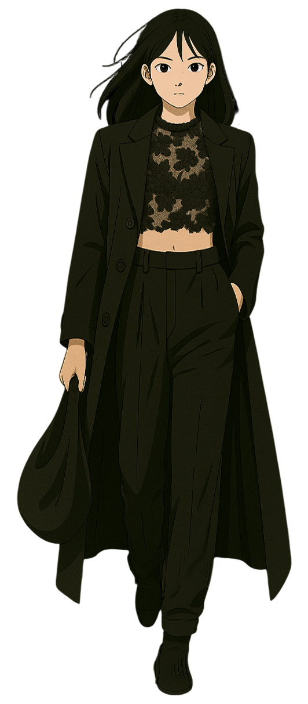
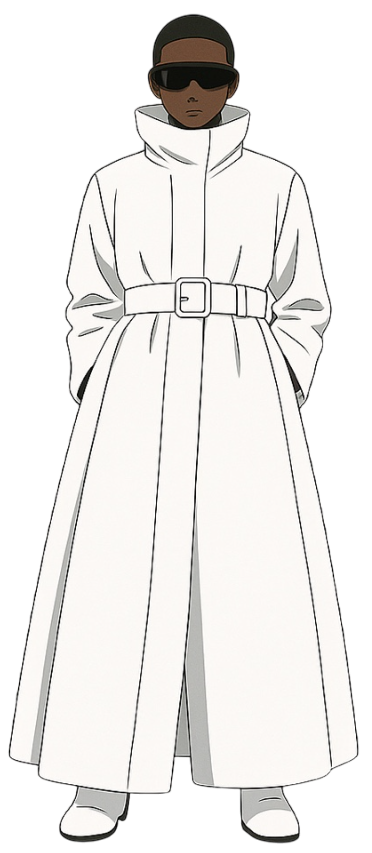
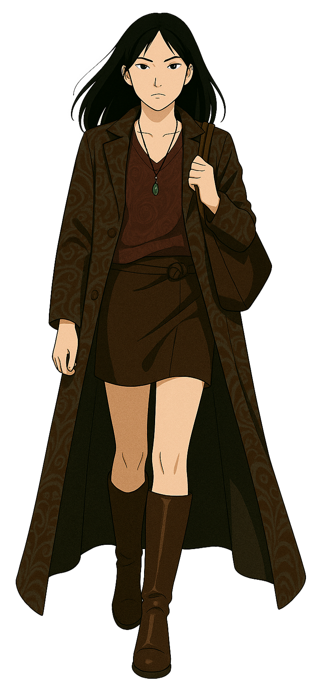

1
FLOORSWEEPING
OUTERWEAR
드라마틱하고 웅장한 분위기를 연출하는
바닥까지 오는 길이의 아우터가 강세를 보입니다.
맥시 코트, 롱 케이프 등은 걸을 때마다
우아한 실루엣을 만들어내며,
FW 시즌 룩에 압도적인 존재감을 더합니다.
TIP
키가 작은 편이라면 벨트를 활용하여
허리선을 강조하거나, 굽이 있는 신발을 매치하여
균형을 맞추는 것이 좋습니다.